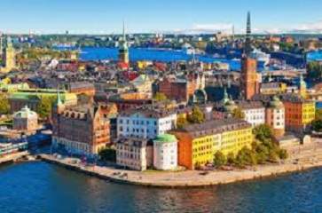

Saiba tudo sobre a Suécia
por Matheus Oliveira
INFORMAÇÕES SOBRE A SUÉCIA
Quando se fala em Suécia, qual a primeira ideia que vem à sua mente? Desenvolvimento, educação, design escandinavo, clima super frio, aurora boreal. O país é isso e muito mais, como você irá conferir neste artigo com tudo sobre a Suécia.
Sabia que é obrigatório ter Seguro de Viagem para entrar na Europa? Seja para morar ou visitar, a imigração pode exigir esse documento no país destino. Se você não tiver, será obrigado a voltar ao Brasil.
Você vai descobrir que eles também são uma referência em ecologia e sustentabilidade, políticas de igualdade de gêneros e diversidade, além de ser uma sólida democracia – embora a Suécia seja uma monarquia. E você sabia que a família real tem um parentesco com o Brasil? O Rei Carlos XVI Gustavo é casado com a Rainha Silvia, nascida na Alemanha e filha de mãe brasileira.
Tipo de Governo
O sistema político na Suécia é uma monarquia parlamentarista (aqui existe um rei, mas ele não tem poderes políticos).
Idiomas falados na Suécia
O sueco é a língua oficial do país. É um idioma de origem germânica, parecido com norueguês e dinamarquês. Mas calma, pois um turista ou um novo morador consegue se comunicar com boa parte da população, já que a maioria dos suecos fala inglês.
População
Expectativa de vida
Cerca de 83 anos para mulheres e de 80 para homens
Economia da Suécia
Do ponto de vista econômico, hoje a Suécia é altamente desenvolvida, estável e diversificada, largamente baseada em serviços. Seu produto interno bruto (PIB) per capita está entre os mais altos da União Europeia, além de uma baixa inflação e um sistema bancário eficiente. Eles conquistaram este cenário com diversas reformas e inovações financeiras a partir dos anos 1990. O país transformou sua economia e consegue crescer diante da incerteza econômica global.
A Capital Estocolmo
Para entender tudo sobre a Suécia, é preciso também mergulhar na sua capital. Cerca de 85% da população vive em áreas urbanas, e uma das mais povoadas é Estocolmo. A cidade se situa ao sudeste, próxima ao Mar Báltico, e é composta de 14 ilhas conectadas por 53 pontes. É um feito da engenharia, sem dúvida.
Com 1,3 milhões de pessoas vivendo na capital e área metropolitana, é a principal cidade do país do ponto de vista econômico. E também político, uma vez que é onde se concentra a sede do governo da Suécia e da monarquia.
Estocolmo é uma cidade multicultural, com atrações importantes como o Palácio Real, a cidade velha (Gamla Stan), o parque de diversões Gröna Lund, fundado em 1883, assim como o Museu do Vasa, o mais visitado de Estocolmo. Ele é a casa do navio de guerra Vasa, que naufragou após sair do porto em sua primeira viagem em 1628.
Custo de vida na Suécia
O custo de vida, especialmente da moradia em regiões centrais das cidades, é considerado alto – inclusive comparando com outros países nórdicos. Quem pesquisa tudo sobre a Suécia sabe que, além destas despesas, a população paga impostos e taxas elevadas para manter o padrão de qualidade de serviços públicos.
Site oficial da Suécia estima que uma pessoa solteira e sem filhos gaste em média 12.410 coroas suecas por mês (cerca de R$5.125). Para detalhar ainda mais, pesquisamos em outubro de 2019 no Numbeo as principais contas pagas pelos suecos.
Aluguel de apartamento de um quarto no centro da cidade 8,086.77 kr (R$3.341) Aluguel de apartamento de um quarto fora do centro da cidade 5,815.71 kr (R$2.403) Aluguel de apartamento de três quartos no centro da cidade 12,885.67 kr (R$5.325) Aluguel de apartamento de três quartos fora do centro da cidade 9,518.04 kr (R$3.933) Salário médio de um sueco (descontados os impostos) 24,038.43 kr (R$9,929) Mensalidade de jardim de infância para um filho 1,349.53 kr (R$557) Despesas básicas com energia, aquecimento, água, lixo para um apartamento de 85 metros quadrados 683.89 kr (R$282) Internet mensal com 60 Mbps ou mais 291.99 kr (R$120) Um ticket de transporte 30.00 kr (R$12) Passe mensal de transporte 800.00 kr (R$330) Refeição em um restaurante econômico 100.00 kr (R$41) Menu com três pratos em restaurante para duas pessoas 600.00 kr (R$247) Capuccino 35.64 kr (R$14) Uma garrafa de vinho 90.00 kr (R$37) Um quilo de laranjas 23.97 kr (R$9,50)
Existiam cerca de 10,12 milhões de habitantes na Suécia em 2018.